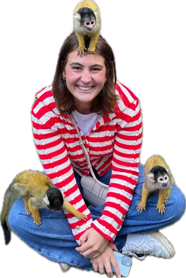

about molly
hello!
the longer version: who i am, what i make, and why i can't stop mixing art with code.

my story
a little bit of everything
i'm molly, a designer, painter and tinkerer. i grew up drawing on everything i could find, then fell in love with computers and realized they could be a paintbrush too.
these days i make websites, needlepoint, jewelry, art and ai-powered tools, usually with too many colors and at least one puzzle piece. i believe tech and creativity belong together, and i love helping people find the spot where they overlap.
when i'm not making things, you'll find me hunting for vintage treasures, playing my records too loud, or making friends with the local wildlife (see: monkeys).
a few fun facts
the important stuff, obviously.
i own way too many paintbrushes and use about three of them.
my favorite color changes weekly. currently: tomato.
i will always stop to pet a dog. or a monkey.
my first website had a glitter cursor and i stand by it.